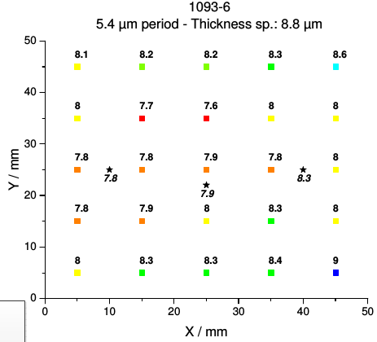
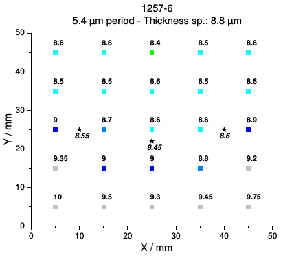

High-energy sources towards 2D applications
goals and motivation
- feasibility of phase contrast on tubes with \(>100\) kVp
- typical environment for medical, security and material science applications
outline
- technical studies
- evaluation of KIT gratings
- applications
- biomedical: lungs
- material science: cement
new batch of KIT gratings
delivered in January
phase-shift gratings
thickness variation above 10%


courtesy of P. Meyer from KIT, see methods
absorption gratings
tried to increase absorption thickness above 100-120 μm
see my report
macroscopic defects in the gold structure
final setup
- G0 from the previous shipping
- G1 most compatible with spec, according to KIT report
- G2 most uniform according to our measurement
~10% visibility
45 keV design, 100 kVp, 6 mA
applications
water diffusion in cement
inspired by Fei Yang's "Dark-field X-ray imaging of unsaturated water transport in porous materials"
the relevant signals
- transmission \(A\)
- dark field \(B\)
- log ratio \(R = \log(A) / \log(B)\)
theoretical introduction
- Lynch et al. \[ B \propto \mu_d = \frac{3\pi}{\lambda^2}f |\Delta n|^2 d \begin{cases} D' & \text{if } D' \leqslant 1\\[2ex] \!\begin{align} D' - \sqrt{D'^2 - 1}\\ (1 + D'^{-2}/2) \\ + (D'^{-1} + D'^{-3} / 4) \\ \log\left(\frac{D' + \sqrt{D'^2 - 1}}{D' - \sqrt{D'^2 - 1}}\right) \end{align} & \text{otherwise} \end{cases} \]
- dark field as a function of sphere diameter and photon energy
sum over the spectrum
\[ R(\energy) = \frac{\log B}{\log A} = \frac{\mu_d}{2k\beta} \]
\[ R = C\frac{\sum_\energy w(\energy)|\Delta n(\energy)|^2 \energy u(\energy)}{\sum_\energy w(\energy) \energy \beta} \]
expect large increase in contrast
\[ R = C\frac{\sum_\energy w(\energy)|\Delta n(\energy)|^2 \energy u(\energy)}{\sum_\energy w(\energy) \energy \beta} \]
- \(u\) depends on the diameter of the pores
- \(\Delta n\) includes \(\delta\)
protocol
- dry cement cylinder at 120 °C for one hour
- isolate sides with water-proof tape
- put the base in contact with water
- repeated radiographs with 20 phase steps x 0.2 s for about two hours
results: absorption
results: ratio \(R\)
first shot

after one hour

contrast-to-noise ratio

contrast-to-noise ratio

quantitative diffusion
thresholding \(\rightarrow\) fraction of wet pixels

conclusions and outline
- critical issues to be considered by in-house fabrication team
- lung experiment would be repeated if we get any emphysematic samples
-
expand the cement measurements
- a complete theoretical treatment is possible by including a beamline micro-CT for the pore-size distribution
- Fei's input particularly valuable now that she joins the team